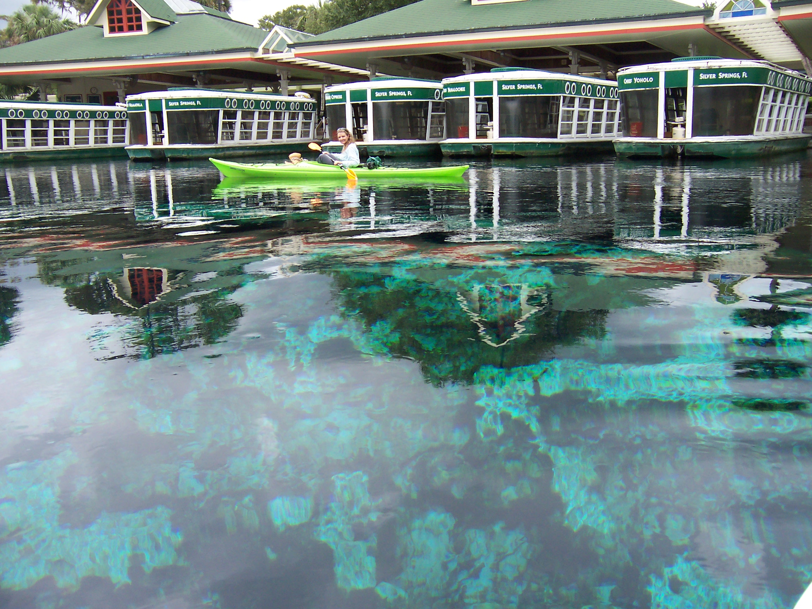
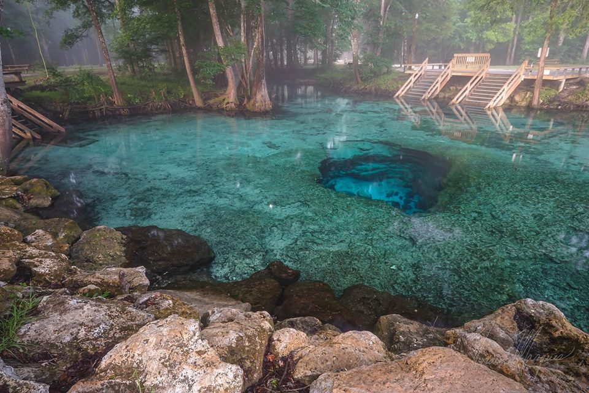
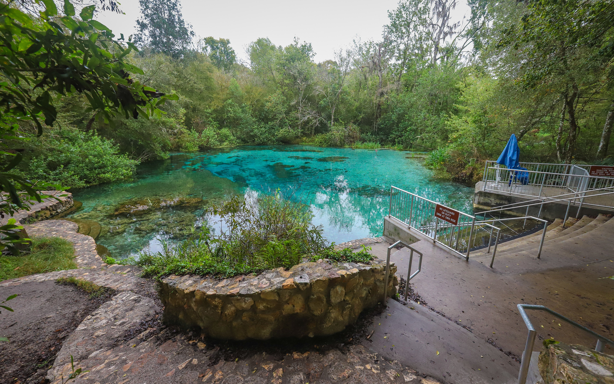
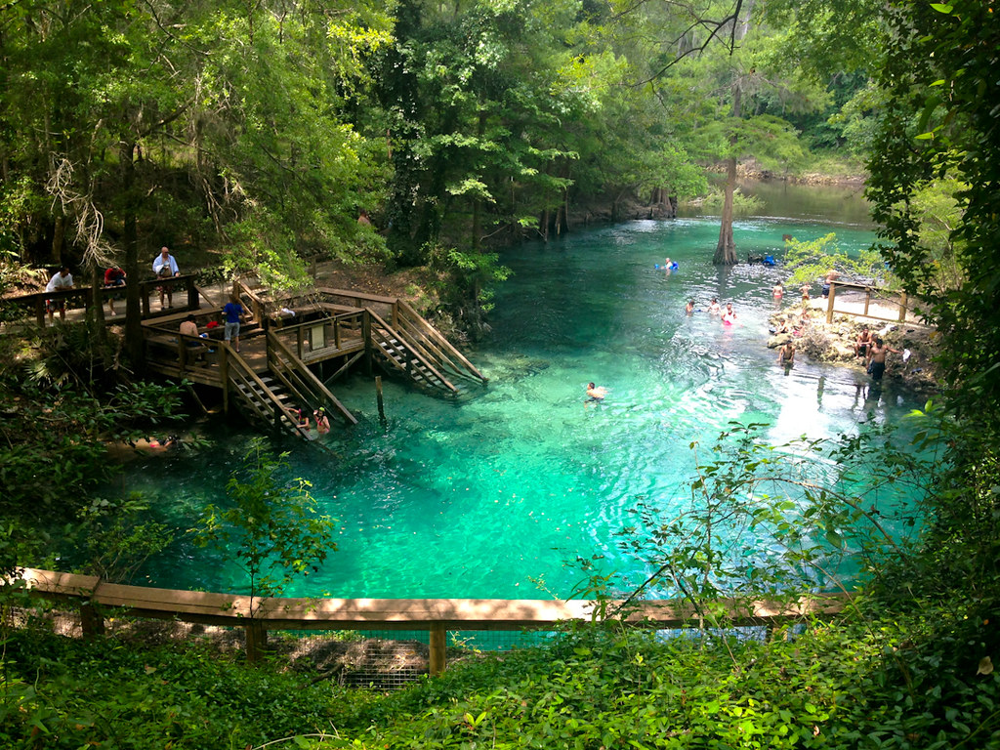
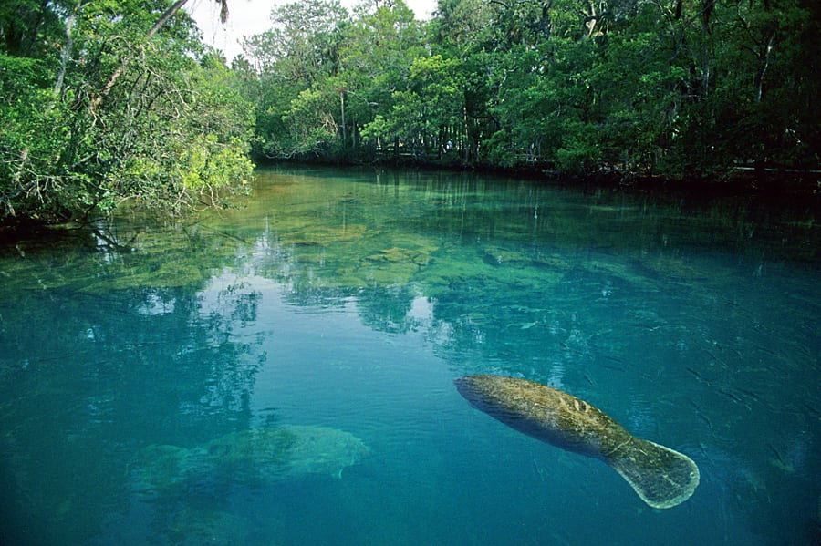
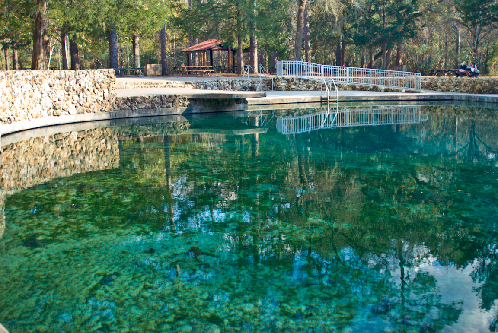
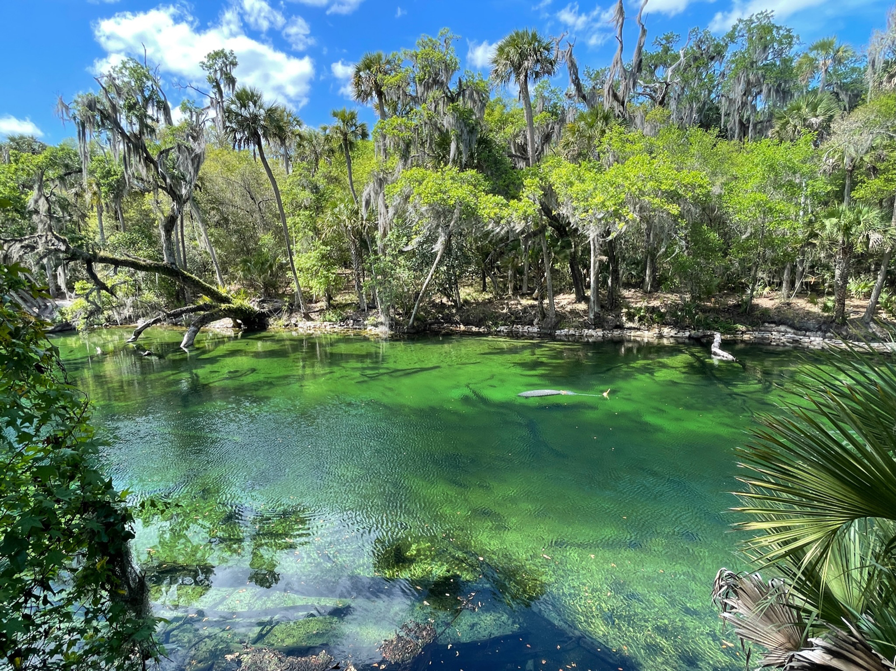

Wekiwa Springs State Park
Wekiwa Springs State Park is a 7,000-acre Florida State Park in Apopka, Florida. With emerald springs feeding the Wekiwa River and lush tropical hammocks, this unique park just minutes from downtown Orlando is perfect for observing abundant wildlife or cooling off on a summer day

miles away.
Silver Springs state Park
The 4,000-acre Silver Springs State Park encompasses not only the springs, but the entire 5-mile Silver River and surrounding sandhill forest.
miles away.
Ginnie Springs Outdoors
From innertubes, to kayaks, to paddleboards and canoes there are many ways to experience Ginnie.
miles away.
Ichetucknee Springs State Park
Ichetucknee Springs State Park is a 2,669-acre wildlife haven where beaver, otter, gar, softshell turtle, wild turkey, wood duck and limpkin all find a home.
miles away.
Madison Blue Spring State Park
This crystal-clear, first-magnitude spring is a popular spot for swimming and cave diving.
miles away.
Manatee Springs State Park
This makes it a popular cooling-off spot and a great place to stroll on the park boardwalk and gaze into watery depths. True to its namesake, manatees can be seen in the cooler months, and birds, mammals and fish are spotted year-round.
miles away.
Ponce De Leon Springs State Park
Visitors can take a leisurely walk along two self-guided nature trails through a lush, hardwood forest and learn about the local ecology and wildlife.
miles away.
Blue Spring State Park
State park offering a variety of outdoor activities including camping, hiking, canoeing, fishing, boating, snorkeling and scuba diving.
miles away.
Wes Skiles Peacock Springs State Park
The park features one of the longest underwater cave systems in the continental United States.

miles away.